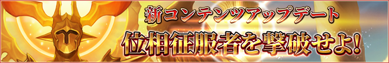
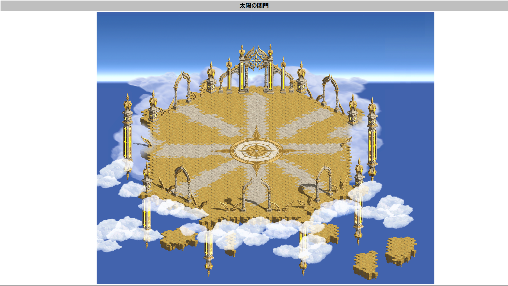
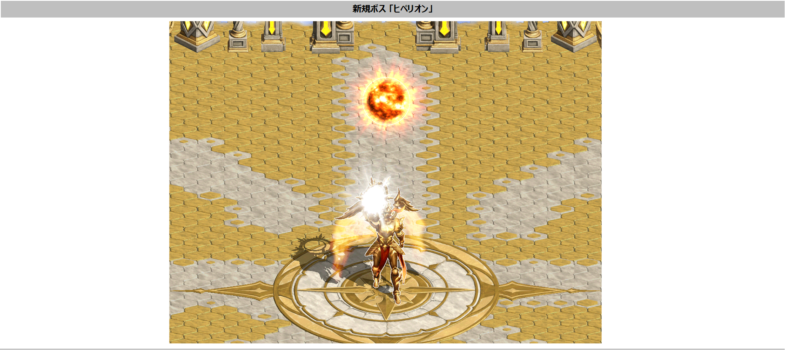
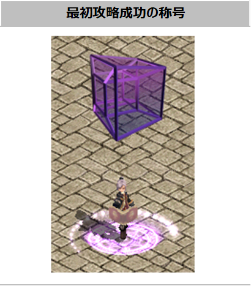

メニュー
トップ >>
モンスター >>
位相征服者ヒペリオン
1250レベルから挑戦できる最高難易度のボスフィールド「太陽の関門」と、そこに君臨する位相征服者「神々しい太陽 ヒペリオン」。
位相ダンジョン全 20 ヶ所を進めながら、最終的に1週1回挑戦するエンドコンテンツです。
2025年6月12日 (ver 0.0855) 実装
ストーリー
太陽の関門 入場方法
フィールド情報・デバフ
クリア報酬: トレジャーボックス[ヒペリオン]
称号「位相探求者」(初回クリア限定)
テッセラクトと交換
ミラーダンジョンの中でも人やモンスターが少ない場所を拠点としていたため、一部のミラーダンジョンが崩壊を免れた。
本来なら過負荷で崩壊したはずのミラーダンジョンだが、累積された RED STONE のオーラを彼らが吸収し、自らの力として影響力を広げるために利用していたからだ。
それぞれの目的により、故郷の次元からフランデル大陸に渡り影響力を広げており、フランデルの世界から最も強力な宝である RED STONE を収集している。
住民の中には位相征服者との衝突で傷を負った者もいるが、逆に彼らを新しい神として崇める者も現れ始めた。
※ サーバとの接続切れ・強制終了・ログイン画面への移動・キャラクター選択画面への移動など、ゲーム内で制限される状況が一定時間経過した場合、ダンジョンは初期化され入場回数はカウントされません。
太陽の関門 全体図
太陽の関門に入場後、待機地域の中にある 「赤い水晶」 をクリックしてヒペリオンがいる戦闘フィールドに移動します。
新規ボス「ヒペリオン」
太陽の関門では一部の能力値が無効化されるデバフ効果が適用されます。
一定確率で 1250ULT防具選択BOX を獲得することができます。
■ トレジャーボックス[ヒペリオン]から獲得できるアイテム
NPC「ケルトル」の 位相征服者商店 で各種アイテムと交換できます。
※ 位相ダンジョン (Lv1250〜2000 の20DG) の狩場情報は別ページに掲載。
■ テッセラクトの主な交換先
出典: 公式お知らせ「位相征服者についてのご案内」(2025年6月12日)
位相征服者ヒペリオン

1250レベルから挑戦できる最高難易度のボスフィールド「太陽の関門」と、そこに君臨する位相征服者「神々しい太陽 ヒペリオン」。
位相ダンジョン全 20 ヶ所を進めながら、最終的に1週1回挑戦するエンドコンテンツです。
2025年6月12日 (ver 0.0855) 実装
ストーリー
太陽の関門 入場方法
フィールド情報・デバフ
クリア報酬: トレジャーボックス[ヒペリオン]
称号「位相探求者」(初回クリア限定)
テッセラクトと交換
ストーリー
悪魔バルザロズが開いた二次元ゲートから渡ってきた異界の強者たち。ミラーダンジョンの中でも人やモンスターが少ない場所を拠点としていたため、一部のミラーダンジョンが崩壊を免れた。
本来なら過負荷で崩壊したはずのミラーダンジョンだが、累積された RED STONE のオーラを彼らが吸収し、自らの力として影響力を広げるために利用していたからだ。
それぞれの目的により、故郷の次元からフランデル大陸に渡り影響力を広げており、フランデルの世界から最も強力な宝である RED STONE を収集している。
住民の中には位相征服者との衝突で傷を負った者もいるが、逆に彼らを新しい神として崇める者も現れ始めた。
太陽の関門 入場方法
| 入場条件 | 1250レベル / 5転生キャラクター |
|---|---|
| 入場人数 | 1〜4人 |
| 入場回数 | 週1回クリアを基準として、週1回入場可能 (入場制限は毎週月曜日の 00:00 に初期化) |
| 制限時間 | 30分 |
| 復活制限 | 8回 (オプション「復活確率」効果は適用されない / スキルでの復活はプレイヤーあたり1回のみ) |
| 受注条件 | 1250レベル以上で位相征服者クエストが自動受注される |
| 入場NPC | 地下界の大使の所在 (漆黒の城 306,283) の 「ケルトル」 または 「イケル」 ※ メインクエスト1のチャプター3「変身」とチャプター4「いつか戻る場所」進行状況によって話しかけるNPCが変わります (チャプター3,4 完了の場合: イケル / 未完了の場合: ケルトル) |
※ サーバとの接続切れ・強制終了・ログイン画面への移動・キャラクター選択画面への移動など、ゲーム内で制限される状況が一定時間経過した場合、ダンジョンは初期化され入場回数はカウントされません。
フィールド情報・デバフ

太陽の関門 全体図
太陽の関門に入場後、待機地域の中にある 「赤い水晶」 をクリックしてヒペリオンがいる戦闘フィールドに移動します。

新規ボス「ヒペリオン」
太陽の関門では一部の能力値が無効化されるデバフ効果が適用されます。
- [回避補正無視]効果の減少
- [命中補正無視]効果の減少
- ソウルガード使用不可
クリア報酬: トレジャーボックス[ヒペリオン]
ヒペリオンクリア時に トレジャーボックス[ヒペリオン] を獲得できます。一定確率で 1250ULT防具選択BOX を獲得することができます。
| アイテム名 | 最大所持数量 | 詳細 |
|---|---|---|
| トレジャーボックス[ヒペリオン] | 100個 | 神々しい太陽ヒペリオンを阻止した冒険家に褒賞として与えられるボックス。冒険の役に立つ品々が入っている。 ※ 取引不可、銀行取引不可、商店販売不可 |
■ トレジャーボックス[ヒペリオン]から獲得できるアイテム
| アイテム名 | 個数 |
|---|---|
| テッセラクト | 2 / 5 / 10 |
| ワンタッチ道具箱[4スロット・2解放] | 1 |
| ワンタッチ道具箱[3スロット・1解放] | 1 |
| 灼熱の解放オプション変換器 | 1 |
| 解放オプション変換器・改 | 1 |
| 解放オプション変換器 | 1 |
| 密封された白い異界の強化石 | 1 |
| スロット集中錬成道具箱 | 1 |
| レプリカ封印解放道具箱 | 1 |
| 完全封印解放道具箱 | 1 |
| 超越の書『物理強打』 | 1 |
| 超越の書『魔法強打』 | 1 |
| 超越の書『魔力の暴走』 | 1 |
| 超越の書『覚醒』 | 1 |
| 超越の書『適応力』 | 1 |
| 超越の書『耐性』 | 1 |
| 超越の書『魔力吸収』 | 1 |
| 超越の書『時空の歪み』 | 1 |
| 超越の書『楔』 | 1 |
| 超越の書『魔力増幅』 | 1 |
称号「位相探求者」(初回クリア限定)
ヒペリオンを最初にクリアしたキャラには、名誉称号エフェクト 「位相探求者」 が付与されます。
テッセラクトと交換
位相ダンジョンの位相兵を倒すと一定確率で 「テッセラクト」 をドロップします。NPC「ケルトル」の 位相征服者商店 で各種アイテムと交換できます。
※ 位相ダンジョン (Lv1250〜2000 の20DG) の狩場情報は別ページに掲載。
| アイテム名 | 最大所持数量 | 詳細 |
|---|---|---|
| テッセラクト | 255個 | 倒れゆく位相兵が遺したエネルギーの結晶。内部を覗くと、言葉では説明しがたい形のエネルギー波長が見える。位相兵たちはこの結晶で、自分の君主が持つ力を具現化したようだ。 ※ 位相征服者商店をご利用頂けます。 |
■ テッセラクトの主な交換先
| アイテム名 | 交換アイテム | 1日購入制限 |
|---|---|---|
| 古代森のコイン × 5 | テッセラクト 1個 | 10個 |
| 洗練された深緑の魔石 × 3 | テッセラクト 1個 | 10個 |
出典: 公式お知らせ「位相征服者についてのご案内」(2025年6月12日)